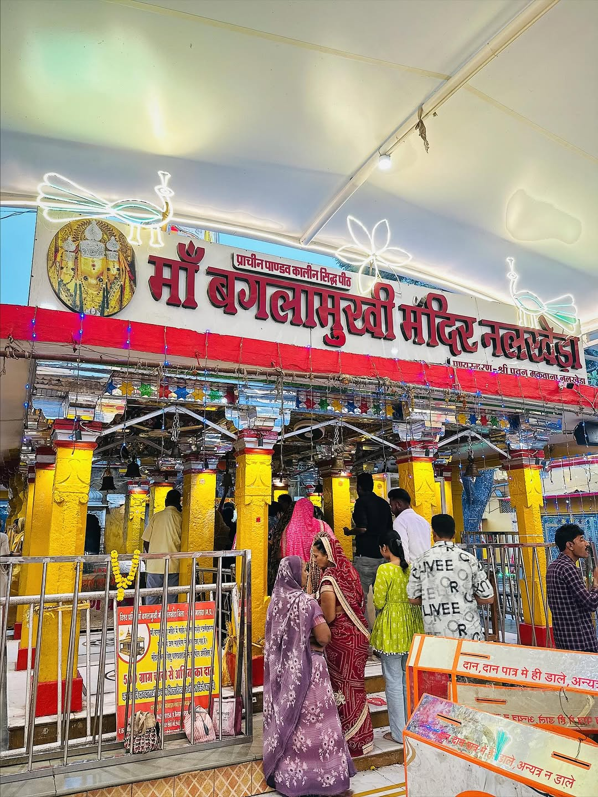
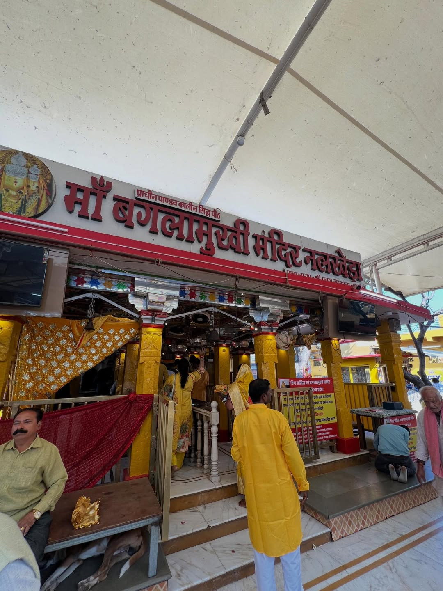

दस महाविद्याओं में आठवीं महाविद्या, जो अपने भक्तों की रक्षा, शत्रु बाधा से मुक्ति एवं विजय का आशीर्वाद प्रदान करती हैं।

माँ बगलामुखी दस महाविद्याओं में से एक हैं। इन्हें शत्रु नाश, विजय, साहस एवं रक्षा की देवी माना जाता है। श्रद्धा और विश्वास से की गई उपासना भक्तों के जीवन में सकारात्मक परिवर्तन लाती है।
नलखेड़ा स्थित माँ बगलामुखी धाम भारत के प्रमुख शक्तिपीठों में से एक माना जाता है, जहाँ देशभर से श्रद्धालु दर्शन एवं अनुष्ठान के लिए आते हैं।
माँ बगलामुखी शक्ति, विजय एवं रक्षा की अधिष्ठात्री देवी मानी जाती हैं।
श्रद्धा एवं विश्वास के साथ की गई उपासना से भक्तों को मानसिक शक्ति एवं आत्मविश्वास प्राप्त होता है।
माँ की आराधना व्यक्ति को कठिन परिस्थितियों का सामना करने का साहस प्रदान करती है।
नियमित पूजा एवं साधना से मन में शांति, सकारात्मकता और आध्यात्मिक जागृति आती है।
मध्य प्रदेश के नलखेड़ा में स्थित माँ बगलामुखी धाम देश के प्रसिद्ध शक्तिपीठों में से एक माना जाता है। यहाँ प्रतिवर्ष हजारों श्रद्धालु दर्शन, पूजा एवं हवन के लिए आते हैं।
यह स्थान अपनी आध्यात्मिक ऊर्जा, धार्मिक महत्व एवं शांत वातावरण के लिए प्रसिद्ध है।
📞 दर्शन एवं बुकिंग
धाम की दिव्यता और आध्यात्मिक वातावरण की कुछ सुंदर झलकियाँ।



हवन, जप, अनुष्ठान एवं धार्मिक परामर्श के लिए अभी संपर्क करें।